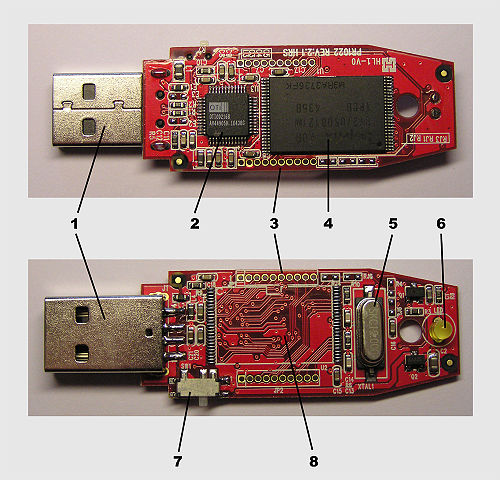
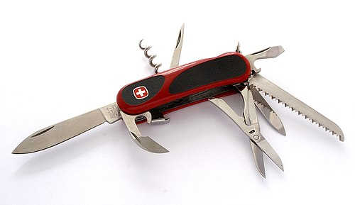

春节假期结束啦，继续来谈信息安全的话题。
先顺便说俩事儿：
1. 虽然本文与上一篇博文的间隔超过两周，但俺上一次【网络活动】是2月7日（在回复读者评论）。所以，依然属于【正常静默】。不要担心俺 :)
2. 上一篇博文发出后，经几位热心读者提醒，俺又对“社会工程学”那个章节补充了几点内容。
前不久正值【开博十周年】之际，俺写了一篇《为啥朝廷总抓不到俺——十年反党活动的安全经验汇总》。
今天这篇是对前一篇进行补充，主要谈——如何对付警方？看到俺写这样的东西，公安系统的“网监部门”和“技侦部门”，肯定又不爽了 :)
为了避免某些读者来抬杠，先声明一下本文讨论范围。
和前一篇博文类似，这篇也是写给“高风险政治人士”（类似俺这种反党人士）的教程。
如果你有可能成为【警方】的重点关注目标，大概就可以算是“高风险”啦。
（注：此处的“警方”包括天朝的“公安部、国安部”或类似机构；也包括其它国家的类似机构）
当然啦，所有的技术都是【双刃剑】——都可能被滥用。某些在网络上干坏事的家伙，也会从本文中受益。关于这点，俺也很无奈 :(
但是，俺不会因为技术存在被滥用的可能性，就停止对技术的传播和普及。
俺已经多次谈过【移动设备的危险性】。显然，“高危人士”就【不该】在手机上进行任何危险操作。
因此，本文不打算谈“手机的话题”，只讨论【个人电脑】（桌面 PC）。
（注：本文中所说的“PC”，既包括“台式机”，也包括“笔记本电脑”）
为了叙述方便，在涉及“操作系统”时，俺会拿 Linux 来说事儿。用 Windows 或 Mac OS 的同学，请依样画葫芦。
为了叙述方便，在谈到“磁盘加密软件”时，俺会以 TC（TrueCrypt）/VC（VeraCrypt）来举例。但本文介绍的方法，也能适用于其它磁盘加密工具（前提是——要支持【key files】这种机制）。
网上已经有很多关于【磁盘加密】的教程。包括俺自己，也已经写了好多这类教程。
为了避免读者说俺炒冷饭，先说说本文的【特色】。
关于其它层面的防御，在《为啥朝廷总抓不到俺——十年反党活动的安全经验汇总》一文中已经谈了很多。所以，本文会更多地讨论：PC 的【物理安全】。
与“网上的骇客”不同，警方不光能【物理接触】你的 PC，甚至可以没收你的 PC（拿回去做“数据取证分析”）。因此，当你面对警方的时候，【物理安全】很重要！
（由于主要讨论“物理安全”）在本文中，如果没有特别注明，关于【操作系统】的讨论，针对的是【物理系统】（Host OS）。
警方不光可以把你的电子设备（电脑、手机）拿去做“数据取证分析”，还可以限制你的行动自由（拘捕/逮捕）。
所以本文会花一些篇幅讨论——如何应对【紧急情况】。也就是说，当你即将丧失行动自由【之前】，该做哪些操作，对你最有利。
请注意：在你被捕之前，你对敏感数据销毁越彻底，警方就越拿你没办法（因此也就对你越有利）。
《孙子兵法》说【知己知彼 百战不殆】。你要防范对方，首先要知道对方有哪些招数。
关于“攻击者如何破解加密盘”这个话题，俺在5年前（2013）已经写了一篇：《TrueCrypt 使用经验[3]：关于加密盘的破解和防范措施》。
虽然那篇是针对 TrueCrypt 加密盘，但其中提到的几种破解手段，对其它格式的加密盘（VeraCrypt，LUKS，BitLocker ......）也适用。
考虑到某些新读者没有看到那篇旧博文，俺把那篇中提到的几种破解手段再【简述】如下。
【成熟的】磁盘加密软件，使用的“对称加密算法”肯定也是【成熟】滴。
以 TC（TrueCrypt）/VC（VeraCrypt）为例，它支持的“对称加密算法”是“Rijndael（AES）、Twofish、Serpent”。
当年美国国家标准局（NIST）公开招标21世纪的新一代加密算法标准（叫“高级加密标准”，简称“AES”）；经过多次淘汰，有5个算法成为【最后一批】候选者，上述的3个算法也在这5个当中；最终是 Rijndael 正式被选中成为 AES（所以，现在所说的 AES 也就是指 Rijndael）。
由于这三个算法是历经淘汰的最后一批候选者，算法本身已经被世界各国的密码学专家仔细检查过啦，【几乎不可能】出现算法层面的漏洞。
引申阅读：在如下博文中介绍了磁盘加密常用的几种“对称加密算法”。
《TrueCrypt 使用经验[1]：关于加密算法和加密盘的类型》
刚才说啦——成熟的磁盘加密软件，使用的加密算法肯定也是【成熟】滴。
既然如此，算法使用的密钥，其“密钥空间”肯定足够大。因此在足够长时间内（几代人），并考虑到摩尔定律带来的算力增长，都【不可能】对密钥进行穷举。
以 AES256 为例，其密钥有【256 比特】，所有可能的密钥数量是【2的256次方】。这个数有多大捏？
这是最常见的手段，专门针对【弱密码】（weak password）。
由于本文要对付的是【警方】。他们比一般的骇客具备更多的资源。比方说，天朝的警方已经建立了专门用于“暴力猜解密码”的【服务器集群】，可以大大提升密码猜解的效率。普通骇客用“单机”无法暴力猜解的密码，有可能被警方搞定。
但是，这招很好对付——你只需要引入【key files】作为加密盘的“认证因素”，就可以让警方的暴力猜解变得【不可能】。
在《TrueCrypt 使用经验[2]：关于加密盘的密码认证和 KeyFiles 认证》一文中，俺已经谈过“key files”的“用途”和“注意事项”。关于“注意事项”，再说一次：
1. key files 要使用“二进制文件”，【不要】用“文本文件”
2. key files 最好是【随机生成】（TC 和 VC 自带了“随机生成 key file”的功能）
3. key files 的文件尺寸【至少64字节】
外行的读者可能会觉得“64字节”太小了。其实“64字节”的随机文件，已经足够对抗穷举。一个字节有8比特，64字节有512比特。因此，64字节的随机内容，其可能的数量是“2的512次方”——这已经大大超过刚才提到的“AES 256 密钥空间”了。
给大伙儿秀一下这个数有多大。
另外，像 TC/VC 这两款磁盘加密软件，最多只提取【每个】key file 开头的一兆字节（1MB）参与密钥生成。所以，随机生成的 key file，每个都【不必】超过 1MB。
前面提到的几种攻击手法，都比较好解决（容易防御）。比较难对付的是这招——“攻击者盗取密钥”。所以，对这招的防范是本文的重点内容之一。
下面，俺分多个章节，对这个话题进行展开。
前面的“攻击手法”都属于【技术手段】。如果警方尝试了技术手段而不可得，那自然会采用【审讯】的方式。
在《为啥朝廷总抓不到俺——十年反党活动的安全经验汇总》一文，俺已经谈到了【如何对付审讯】（包括酷刑）。
原理很简单——如果你的加密盘采用了【随机生成】的 key files 作为“认证因子”。你只需要在“丧失行动自由（被捕）”之前【彻底销毁】key files；如此一来，连你自己都【不可能】打开加密盘。酷刑也就失去意义啦。
原理说起来蛮简单，但落实起来会涉及到很多细节。比如说：如何【既彻底又快速】地销毁 key files？下面单列一个章节来谈。
（考虑到大部分读者基本不懂密码学，俺尽可能通俗地解释一下【密钥】是啥玩意儿）
密钥说白了就是一段数据，可以用来加密或者解密。磁盘加密软件用的算法都是“对称加密算法”。这种算法的特点是：“加密的密钥”和“解密的密钥”是【同一个】。假设你用“密钥 K”把一段“明文 P”变成“密文 C”，那么你同样可以用 K 把 C 变为 P。
除了“对称加密算法”，还有一类算法叫做“非对称加密算法”——“加密的密钥”和“解密的密钥”是【不同】滴。这类算法与本文无关，就不展开介绍啦。
很多不懂技术的网友经常混淆“密钥”和“密码”，其实这两者是【完全不同】滴：
1. 密钥（key）直接参与加密/解密运算滴。
2. 密码（password）【不】参与“加密/解密”运算，它的作用是保护“密钥”。
首先，
如果攻击者能通过某种方式【窃取】密钥（key），就可以直接用密钥（key）【解密】加密盘存储的数据。
也就是说——在【不知道】你的密码和 key files 的情况下，也能打开加密盘。
其次，
一旦创建了加密盘，其密钥就固定了。即使你修改了加密盘的“认证因子”（“密码”或“key files”），密钥依然【不变】。
一旦攻击者拿到某个加密盘的密钥，不论你如何修改密码，攻击者依然可以打开这个加密盘。
综上所述，
“密钥”的重要性【超过】“密码”和“key files”。
（本小节谈【技术原理】。比较懒的同学，可以跳过这个小节。不影响后续阅读）
密钥的生成
简单地说，是通过某种复杂的数学运算产生出来（密码学术语叫“密钥生成函数”）。在“密钥生成函数”的生成过程中会用到【哈希运算】和【多次迭代】。（注：“哈希运算”也叫“散列运算”，洋文叫“hash”，这篇博文有 hash 的扫盲）
如果你用图形界面的 TC 或 VC 创建一个新的加密盘，在创建过程中，软件会提示你：尽可能快速并随机地移动鼠标。这么干是通过你随机移动鼠标，让软件能收集到足够多的随机数据（足够的【熵值】）
为啥要搞如此复杂的数学方式来创造密钥捏？（通俗地说）要达到——为了让密钥尽可能随机，使得攻击者无法猜测密钥，也无法缩小密钥的分布范围。
密钥的存储
加密盘的密钥，会以【加密】的形式存储在加密盘的“头部或尾部”。而你设置的“密码”或“key files”，就是用来加密密钥的。
所以，当你要打开加密盘时，如果输错了“密码”或“key files”，加密盘的密钥解不出来，自然就打不开。
关于这点，无需多言。
如果你的物理系统本身已经中招（感染了恶意软件），那么，其它所有的防范措施皆是空中楼阁。
关于这个话题，可以参见之前的系列教程：
《如何防止黑客入侵》
这2点也是老调重弹了——俺刚在《为啥朝廷总抓不到俺——十年反党活动的安全经验汇总》中已经提到过。
设置这两个密码，是为了防止攻击者（警方人员）在物理接触你的电脑之后，在（主引导扇区的）boot loader 中植入恶意软件，从而盗取你全盘加密的“密码或密钥”。
（注：在【不】依赖外部启动介质的情况下，主引导扇区是【不可能】加密滴。因为至少要有一个【明文】的程序，让你输入“全盘加密的”解锁密码，并执行解锁的动作）
从技术上讲，你也可以把 boot loader 放到某个外置的【可启动 U 盘】中，每次开机都先插入该 U 盘。但这么干太麻烦，而且会引来额外的风险。因为 U 盘没法像笔记本那样设置【硬盘锁】。警方的技侦人员如果能偷偷拿到你的这个启动 U 盘，同样可以植入恶意软件。
现代操作系统都有“虚拟内存”的机制。对 Windows 而言，叫做“页交换文件”，对 Linux 而言就是“swap 分区”。
“虚拟内存”的作用在于——当物理内存比较紧张的时候，把一些不经常访问的“内存页”转储到硬盘，就可以腾出物理内存来存放新的内容。
一旦启用了“虚拟内存”，也就存在某种可能性——【敏感加密盘的密钥】有可能会残留在“虚拟内存”（也就是硬盘上）——显然，这增加了你的风险。
有些同学可能会问：既然已经“全盘加密”，不论是“swap 分区”还是“页交换文件”，都被加密了。为啥还要担心这个风险？
下面，俺来回答一下——
前一篇博文之所以建议：在“全盘加密”的基础上再搞“敏感加密盘”，就是因为这两个东西的【密级不同】——“敏感加密盘”的密级【更高】。
如果你在物理系统（Host OS）中启用了“虚拟内存”，你就把“敏感加密盘”的安全等级【降低到】与“全盘加密”一样的水平。换句话说，一旦攻击者能够突破全盘加密，也就【有可能】从“虚拟内存”中找到“敏感加密盘的密钥”，从而突破“敏感加密盘”。
在《为啥朝廷总抓不到俺——十年反党活动的安全经验汇总》一文中，俺提到：
休眠（hibernation）
所谓的“休眠”（hibernation），说白了就是把【整个物理内存】保存到硬盘中的“休眠文件”。这非常危险！危险的原因参见“虚拟内存”那个小节的讨论。另外，如果你在【未卸载】“敏感加密盘”的情况下让系统休眠，那么“休眠文件”中【必定包含】“敏感加密盘”的【密钥】。
待机（suspend，stand by）
如果你已经禁用了“虚拟内存”和“休眠功能”，仅仅是让系统“待机”，这种情况下，加密盘的密钥【不会】出现在硬盘上，但还是有风险——如果你在待机之前【没有】卸载加密盘，加密盘的密钥还在物理内存（RAM）中。
如今的 DRAM 内存条在断电后依然有【数据残留】。在你离开电脑的这段时间里，如果警方的技侦人员对（正在待机的）电脑进行【冷启动攻击】（洋文叫“cold boot attack”，维基百科的链接在“这里”），可以直接拿到【内存条】中的数据，再从中分析出“加密盘密钥”。
（注：断电之后，内存条中的数据【不会】立即消失，会有一个残留时间。温度越低，残留时间越长。在正常的室温下，内存条的数据残留时间【不超过】10分钟）
引申阅读：
在2013年的旧博文，俺已经介绍了【冷启动攻击】的原理和手法。
《TrueCrypt 使用经验[3]：关于加密盘的破解和防范措施》
“冷启动攻击”这个手法已经有10年以上的历史。很多笔记本厂商在硬件和 BIOS 方面做了一些防范措施。可惜的是：前几个月（2018年9月），国外安全研究人员曝光了“冷启动攻击”的新进展——可以突破所有主流 PC 厂商（与“待机”相关）的防御。
《研究人员警告现代计算机都易受冷启动攻击 @ Solidot》
《New modification of the old cold boot attack leaves most systems vulnerable @ Ars Technica》
关机（shutdown）
既然“休眠”和“待机”都靠不住，你只剩下一个选择——【关机】。
前面提到——正常的室温下，内存条的数据残留时间【不超过】10分钟。也就是说，只要关机超过10分钟，就【不可能】进行“冷启动攻击”了——因为内存条中的数据全都消失了。
补充：锁定屏幕
如果你仅仅是“锁定屏幕”，其风险情况与“待机”类似——你的 PC 会被【冷启动攻击】搞定。
补充：混合睡眠模式
经热心读者提醒：Windows8 开始引入了【混合睡眠模式】。即使在“待机”状态下也会保存一部分内存到硬盘上。
因此，你应该彻底禁止“休眠功能”（具体参见微软官网的“这个链接”）。
“FireWire”是某种硬件接口规格（俗称“火线接口”，也叫“IEEE 1394 接口”）。这玩意儿支持 DMA（direct memory access）方式直接操作【物理内存】。所以攻击者如果能物理接触你的电脑，可以在你的电脑上插入某个特定 FireWire 设备，然后利用 DMA 的方式直接读取整个系统的内存。因此，这招也叫做“DMA attack”
这种攻击方式不仅仅是理论上可行，前几年就已经有人搞了傻瓜化的“DMA 攻击工具”。
如果 BIOS 有 FireWire DMA 相关选项，应该禁掉；或者在操作系统层面禁用相关的功能（通过“重编译 Linux 内核”）。
由于这个方式也是针对【运行状态下】盗取内存。所以，【关机】可以对付这种攻击方式。
为了介绍后面的章节，需要先扫盲一个小知识——损耗均衡技术（洋文叫“wear leveling”）。
考虑到本文的大部分读者不是 IT 硬件方面的专业人士，俺尽量通俗地扫盲一下。
所谓的“固态硬盘”（SSD），是以【闪存】作为永久性存储介质。平时咱们用的“U盘”也是以【闪存】作为介质。（为了打字省力，本文以下章节凡是提到“闪存介质”，就是指——“采用闪存作为存储介质”的各种东西的【总称】）
“闪存介质”相比“机械硬盘”的一大【缺点】是——写入次数的上限比较低。如果某个存储单元的数据反复更改（反复写入），达到上限后，这个存储单元就坏掉（变为“不可用”）。
“闪存介质”的厂商为了解决这个问题，采用了“损耗均衡技术”（详细介绍请看维基百科的“这个链接”）。比如某个文件，原先存储在“a单元”，当你更改了文件内容并保存，新的内容就不在“a单元”了，而是把新内容存到一个用得最少的“b单元”。此时，“a单元”里面依然有该文件的【旧内容】。
请注意，这个技术是由【硬件层面】（闪存介质的控制器）实现的，对操作系统【不可见】。
聪明的读者，看完前一个小节，已经发现问题所在了。
很多时候，为了彻底删除文件，要用“垃圾数据（随机数据）”去覆盖文件的原有内容，从而让原有内容【不可恢复】。这个招数对“机械硬盘”是 OK 的，但对“闪存介质”就不灵了。因为“损耗均衡技术”使得你覆盖的内容存到的【别的】单元，根本【没达到】你想要的目的。
而且俺刚才也说了——“损耗均衡技术”是由硬件层面的存储控制器实现，对操作系统不可见。所以，用【软件方式】难以证明某个存储单元是否【真正被覆盖了】。
综上所述，要想在“闪存介质”中彻底删除文件，你需要换一种思路，大致如下：
1. 先简单删除该文件
2. 用垃圾数据（随机数据）填满该存储介质的剩余空间——要 100% 填满。
（这样才能确保——原先保存过敏感数据的单元，已经被垃圾数据覆盖掉）
注意事项：要填满的是【物理硬盘】的“剩余空间”，而不是【分区】的“剩余空间”。
举个例子：
假设你的固态硬盘有多个分区。敏感文件在“分区1”，你把敏感文件删除后，光填满“分区1”的剩余空间是【不够】滴。
正确做法是——你要把【所有】分区的剩余空间都填满，才能确保之前保存过敏感数据的单元，确实被垃圾数据覆盖掉了。
某些闪存介质的厂商会提供一些配套的工具/软件，据说可以提供【彻底删除】的功能。
对此，俺表示谨慎的怀疑。因为无法验证其效果。
所以，为了保险起见，还是老老实实去【填满剩余空间】吧。
正式因为“闪存介质”要彻底删除文件，如此之麻烦。所以那些看重隐私保护的同学，更加应该早早用上【全盘加密】。
一旦你在“闪存介质”上使用【全盘加密】，每一个物理存储单元中的数据都是【密文】——“损耗均衡技术”就不再是障碍啦。
为啥俺强调【彻底】？——只有彻底地销毁数据，才能对付警方的【取证软件】；
为啥俺强调【迅速】？——警方想要拘捕你，当然不会留给你从容的时间。比如说：当警方人员正在撞门的时候，留给你的时间可能连1分钟都不到。
本章节所说的“销毁”是指——让任何人【包括你自己】再也无法得到加密盘里面的数据。
本文发出后，某些热心读者提到了“哄骗”的招数。简单说就是：你假装销毁，但其实并没有。这样做，将来你自己还能继续打开加密盘。
俺认为：这种方法【不够】可靠，甚至是危险的想法。理由如下：
如果你是警方的重点关注对象，或者你是重大案件的关键人物，警方肯定会动用【刑侦和审讯】方面的高手来参与办案。
在这种情况下，你【别想】太容易哄骗对方。除非你自己也受过【严格的】“反侦查和反审讯”方面的训练。
但试问：有几个人具备这个条件？
基于上述理由——只有当你在紧急情况下，无法彻底销毁敏感数据，再考虑“哄骗”的招数。
首先来说说【反面】教材。所谓“错误的方式”指的是——【不够彻底】或者【不够快速】的方式。
错误方式1——用“普通的删除命令”删除加密盘里面的文件
（所谓的“普通删除命令”，比如：Linux 下的
首先，这种做法【不】彻底（会被“取证软件”恢复出来）；其次，如果加密盘中的文件很多，这种做法太慢。
错误方式2——用“专门的【擦除】命令”彻底删除加密盘里面的文件
（所谓的“专门的擦除命令”，比如 linux 下的
这种方式比较彻底，但是【慢】。如果文件很多，就非常慢。
（注：shred 支持【多轮反复擦除】，可以防范专业取证人员对机械硬盘的“剩磁分析”，但也导致其速度很慢。即使你把 shred 设置为“只擦除1轮”，速度还是慢）
错误方式3——快速格式化
这种方式速度快，但是不彻底——被“快格”的分区，数据全都在。
错误方式4——彻底格式化
这种方式算是比较彻底，可惜【太慢】了。如果格式化的分区有好几个 GB，你就慢慢等吧。
关于这招，已经提到过多次了。不但本文提到，之前在多篇博文中也提到。
这种方式有两种实现——“软删除”和“硬删除”。
如果 key files 存储在 PC 的硬盘上，用软件方式（比如：shred 命令）彻底擦除内容。为了讨论方便，以下称之为：“软删除 key files”。
如果 key files 放在【外部】的存储介质（比如：U盘、MMC/SD 卡、...），你可以先把存储卡插到 PC 上，然后用软件干掉 key files（依然是“软删除”）；但你还可以用【物理方式】直接破坏存储介质（这种情况称为——“硬删除 key files”）。
由于 key files 都很小（通常小于 1MB），所以“软删除 key files”肯定是【既快速又彻底】。
提醒：“软删除”的【局限性】
如果是【机械硬盘】，“软删除”是 OK 的；但如果是【固态硬盘】，“软删除”【不】保险。原因请参见本文前面章节介绍的【损耗均衡技术】。
至于“硬删除”的方式
由于存在几种不同情况，后面俺用一个单独的章节来讨论。
前面俺聊“密钥的存储”，已经提到——磁盘加密软件为了能打开加密的数据，必须把密钥（以【加密形式】）存储在某个地方。通常是存储在加密盘的【头部或尾部】。
当你输入认证因子（“密码”和“key files”），加密软件根据“认证因子”进行一系列数学运算，然后从密钥存储区中解密出【加密盘的密钥】。如果你的认证因子输错了，密钥就解不出，加密盘自然打不开。
所以，如果你用“随机数据”把加密卷的【头部和尾部】两者都覆盖，就足以【彻底破坏】整个加密盘。
密钥存储区通常很小（不到 1KB）。为了保险起见，咱们把覆盖范围扩大一千倍（从 1KB 变为 1MB），彻底覆盖加密盘最开头的 1MB 和最末尾的 1MB，肯定就能毁掉“密钥存储区”了。
再来看“速度”——哪怕老式的机械硬盘，对头尾各写入 1MB 的数据，也可以在1秒内完成。所以这招属于【既彻底又快速】。
提醒：本招数的【局限性】
如果是【机械硬盘】，可以用这招；但如果是【固态硬盘】，这招【不】保险。原因请参见刚才介绍的“损耗均衡技术”。
（所谓的【运行状态】指的是——出现“紧急情况”时，你的 PC 处于【开机运行】，并且你正在操作它）
在这种情况下，显然【可以用】“破坏加密盘”的方式。
至于“删除 key files”是否可用，取决于你的 key files 存储放在哪里？
1. 如果你的 key files 存储在 PC 上，也可用“【软】删除 key files”的方式。
2. 如果你的 key files 位于【外部】存储介质（比如：U盘、MMC/SD 卡、...），并且这个存储介质【没有】插在电脑上，就应该用“【硬】删除 key files”的方式。
当你的 PC 处于【关机状态】，一旦碰到紧急情况，你已经来不及开机并启动系统。所以，“破坏加密盘”显然不可行；同样的道理，此时“软删除 key files”也不可行。
因此，在【离线状态】下，你只有唯一的选项——“硬删除 key files”。
从上述两种状态的权衡，很自然就可以得出结论——key files 必须位于你【身边】的存储介质中。只有这样才能保证——你在【各种情况】下都能【快速且彻底】地销毁加密数据。
为了让大伙儿一目了然，放一个对照表：
好，现在来谈“硬删除 key files”的方式——也就是“从物理上毁掉存储卡”。
（注：本章节所说的“存储卡”包括：U盘、SD卡、MMC卡...）
再次唠叨：这种“物理破坏”的方式比较粗鲁，是【紧急情况下】的无奈之举。如果你的时间比较从容，应该用前面提到的软件方式——删除敏感文件后，通过填充垃圾数据，塞满整张存储卡的剩余空间。
为了方便讲解，从维基百科剽窃了一张照片，并附上相应的说明。

对存储卡而言，除了【闪存芯片】，其它的都是浮云。
因为其它所有的部件全被毁掉，只要【闪存芯片】还完好，就可以通过专用的设备，读取出里面保存的数据。
关于这个话题，俺看过一些资料，以及网上的讨论。权衡下来，能够在“短时间”（1分钟内）物理破坏“闪存芯片”的方式，大致有两种：
电磁方式——微波炉
把存储卡放入微波炉并启动。
这么干，不但能毁掉存储芯片，可能你的微波炉也会跟着报废。但在紧急情况下，一个微波炉又算得了什么？
机械方式——砸烂
如果你身边有锤子、扳手（或诸如此类的工具），对准结构图当中那个“傻大黑粗”的家伙狠狠砸下去，砸烂为止。
由于“闪存芯片”比较硬，还可以考虑用某个尖锐的东西作为辅助（学过基础物理学的应该明白——这可以增加压强）。就比如说，把一个钉子架在“闪存芯片”上，然后再用锤子敲击钉子，更容易击穿芯片的外壳。
但如今现代化的家庭或办公室中，要想找一个钉子还真不太容易。那么，啥东西可以作为钉子的替代品捏？俺列几个替代品作为参考（欢迎大伙儿补充）

（某款瑞士军刀的示意图——几乎每种款式的瑞士军刀都带有尖锐的工具）
现在介绍【不】那么彻底的方式。也供高风险人士参考。
在紧急情况下，如果你身边没有微波炉也没有砸烂芯片的工具，还有一招是——用冲水马桶把存储卡冲掉。如今的存储卡都比较小，至少不会卡在马桶里。
但要强调的是——这招【不彻底】，因为存储卡浸泡在普通液体（只要不是强酸），即使长达几天时间，还是有可能恢复出数据。
如果你用了这招，那主动权就转到警方这边——考验他们是否愿意到粪坑里去找存储卡了。
如果你确实认为自己是【高风险人士】，本文讲述的这些东西，你【不要】光看看而已。要先做好准备工作，甚至来一次演习（彩排）。
否则真的到了紧急情况，你在慌乱之中很可能会出错。（这是本文最后的忠告）
俺博客上，和本文相关的帖子（需翻墙）：
《为啥朝廷总抓不到俺——十年反党活动的安全经验汇总》
《文件加密的扫盲介绍》
《扫盲文件完整性校验——关于散列值和数字签名》
《TrueCrypt 使用经验》（系列）
《扫盲 VeraCrypt——跨平台的 TrueCrypt 替代品》
《扫盲 dm-crypt——多功能 Linux 磁盘加密工具（兼容 TrueCrypt 和 VeraCrypt）》
《扫盲 Linux 逻辑卷管理（LVM）——兼谈 RAID 以及“磁盘加密工具的整合”》
《文件备份技巧：组合“虚拟加密盘”与“网盘”》
《如何保护隐私》（系列）
《如何防止黑客入侵》（系列）
《扫盲 Linux＆UNIX 命令行——从“电传打字机”聊到“shell 脚本编程”》
《扫盲操作系统虚拟机》（系列）
先顺便说俩事儿：
1. 虽然本文与上一篇博文的间隔超过两周，但俺上一次【网络活动】是2月7日（在回复读者评论）。所以，依然属于【正常静默】。不要担心俺 :)
2. 上一篇博文发出后，经几位热心读者提醒，俺又对“社会工程学”那个章节补充了几点内容。
★引子
前不久正值【开博十周年】之际，俺写了一篇《为啥朝廷总抓不到俺——十年反党活动的安全经验汇总》。
今天这篇是对前一篇进行补充，主要谈——如何对付警方？看到俺写这样的东西，公安系统的“网监部门”和“技侦部门”，肯定又不爽了 :)
★本文讨论的范围
为了避免某些读者来抬杠，先声明一下本文讨论范围。
◇面向【高风险政治人士】
和前一篇博文类似，这篇也是写给“高风险政治人士”（类似俺这种反党人士）的教程。
如果你有可能成为【警方】的重点关注目标，大概就可以算是“高风险”啦。
（注：此处的“警方”包括天朝的“公安部、国安部”或类似机构；也包括其它国家的类似机构）
当然啦，所有的技术都是【双刃剑】——都可能被滥用。某些在网络上干坏事的家伙，也会从本文中受益。关于这点，俺也很无奈 :(
但是，俺不会因为技术存在被滥用的可能性，就停止对技术的传播和普及。
◇本文只讨论【个人电脑】，【不】讨论手机或平板
俺已经多次谈过【移动设备的危险性】。显然，“高危人士”就【不该】在手机上进行任何危险操作。
因此，本文不打算谈“手机的话题”，只讨论【个人电脑】（桌面 PC）。
（注：本文中所说的“PC”，既包括“台式机”，也包括“笔记本电脑”）
◇本文主要介绍【通用】的方法论
为了叙述方便，在涉及“操作系统”时，俺会拿 Linux 来说事儿。用 Windows 或 Mac OS 的同学，请依样画葫芦。
为了叙述方便，在谈到“磁盘加密软件”时，俺会以 TC（TrueCrypt）/VC（VeraCrypt）来举例。但本文介绍的方法，也能适用于其它磁盘加密工具（前提是——要支持【key files】这种机制）。
★本文的特色
网上已经有很多关于【磁盘加密】的教程。包括俺自己，也已经写了好多这类教程。
为了避免读者说俺炒冷饭，先说说本文的【特色】。
◇本文会更多地讨论【物理安全】
关于其它层面的防御，在《为啥朝廷总抓不到俺——十年反党活动的安全经验汇总》一文中已经谈了很多。所以，本文会更多地讨论：PC 的【物理安全】。
与“网上的骇客”不同，警方不光能【物理接触】你的 PC，甚至可以没收你的 PC（拿回去做“数据取证分析”）。因此，当你面对警方的时候，【物理安全】很重要！
（由于主要讨论“物理安全”）在本文中，如果没有特别注明，关于【操作系统】的讨论，针对的是【物理系统】（Host OS）。
◇本文会更多地讨论【紧急情况】的应对
警方不光可以把你的电子设备（电脑、手机）拿去做“数据取证分析”，还可以限制你的行动自由（拘捕/逮捕）。
所以本文会花一些篇幅讨论——如何应对【紧急情况】。也就是说，当你即将丧失行动自由【之前】，该做哪些操作，对你最有利。
请注意：在你被捕之前，你对敏感数据销毁越彻底，警方就越拿你没办法（因此也就对你越有利）。
★警方如何【破解】加密盘？
《孙子兵法》说【知己知彼 百战不殆】。你要防范对方，首先要知道对方有哪些招数。
关于“攻击者如何破解加密盘”这个话题，俺在5年前（2013）已经写了一篇：《TrueCrypt 使用经验[3]：关于加密盘的破解和防范措施》。
虽然那篇是针对 TrueCrypt 加密盘，但其中提到的几种破解手段，对其它格式的加密盘（VeraCrypt，LUKS，BitLocker ......）也适用。
考虑到某些新读者没有看到那篇旧博文，俺把那篇中提到的几种破解手段再【简述】如下。
◇利用“加密算法本身的漏洞”——基本上【不可能】
【成熟的】磁盘加密软件，使用的“对称加密算法”肯定也是【成熟】滴。
以 TC（TrueCrypt）/VC（VeraCrypt）为例，它支持的“对称加密算法”是“Rijndael（AES）、Twofish、Serpent”。
当年美国国家标准局（NIST）公开招标21世纪的新一代加密算法标准（叫“高级加密标准”，简称“AES”）；经过多次淘汰，有5个算法成为【最后一批】候选者，上述的3个算法也在这5个当中；最终是 Rijndael 正式被选中成为 AES（所以，现在所说的 AES 也就是指 Rijndael）。
由于这三个算法是历经淘汰的最后一批候选者，算法本身已经被世界各国的密码学专家仔细检查过啦，【几乎不可能】出现算法层面的漏洞。
引申阅读：在如下博文中介绍了磁盘加密常用的几种“对称加密算法”。
《TrueCrypt 使用经验[1]：关于加密算法和加密盘的类型》
◇对密钥的穷举——基本上【不可能】
刚才说啦——成熟的磁盘加密软件，使用的加密算法肯定也是【成熟】滴。
既然如此，算法使用的密钥，其“密钥空间”肯定足够大。因此在足够长时间内（几代人），并考虑到摩尔定律带来的算力增长，都【不可能】对密钥进行穷举。
以 AES256 为例，其密钥有【256 比特】，所有可能的密钥数量是【2的256次方】。这个数有多大捏？
2^256 = 115792089237316195423570985008687907853269984665640564039457584007913129639936
◇对【弱】密码/口令的【暴力猜解】——常见招数
这是最常见的手段，专门针对【弱密码】（weak password）。
由于本文要对付的是【警方】。他们比一般的骇客具备更多的资源。比方说，天朝的警方已经建立了专门用于“暴力猜解密码”的【服务器集群】，可以大大提升密码猜解的效率。普通骇客用“单机”无法暴力猜解的密码，有可能被警方搞定。
但是，这招很好对付——你只需要引入【key files】作为加密盘的“认证因素”，就可以让警方的暴力猜解变得【不可能】。
在《TrueCrypt 使用经验[2]：关于加密盘的密码认证和 KeyFiles 认证》一文中，俺已经谈过“key files”的“用途”和“注意事项”。关于“注意事项”，再说一次：
1. key files 要使用“二进制文件”，【不要】用“文本文件”
2. key files 最好是【随机生成】（TC 和 VC 自带了“随机生成 key file”的功能）
3. key files 的文件尺寸【至少64字节】
外行的读者可能会觉得“64字节”太小了。其实“64字节”的随机文件，已经足够对抗穷举。一个字节有8比特，64字节有512比特。因此，64字节的随机内容，其可能的数量是“2的512次方”——这已经大大超过刚才提到的“AES 256 密钥空间”了。
给大伙儿秀一下这个数有多大。
2^512 = 13407807929942597099574024998205846127479365820592393377723561443721764030073546976801874298166903427690031858186486050853753882811946569946433649006084096
另外，像 TC/VC 这两款磁盘加密软件，最多只提取【每个】key file 开头的一兆字节（1MB）参与密钥生成。所以，随机生成的 key file，每个都【不必】超过 1MB。
◇【窃取】加密盘的【密钥】——常见招数，本文的重点
前面提到的几种攻击手法，都比较好解决（容易防御）。比较难对付的是这招——“攻击者盗取密钥”。所以，对这招的防范是本文的重点内容之一。
下面，俺分多个章节，对这个话题进行展开。
◇用【审讯】的方式获得“密码和 key files”——常见招数，本文重点
前面的“攻击手法”都属于【技术手段】。如果警方尝试了技术手段而不可得，那自然会采用【审讯】的方式。
在《为啥朝廷总抓不到俺——十年反党活动的安全经验汇总》一文，俺已经谈到了【如何对付审讯】（包括酷刑）。
原理很简单——如果你的加密盘采用了【随机生成】的 key files 作为“认证因子”。你只需要在“丧失行动自由（被捕）”之前【彻底销毁】key files；如此一来，连你自己都【不可能】打开加密盘。酷刑也就失去意义啦。
原理说起来蛮简单，但落实起来会涉及到很多细节。比如说：如何【既彻底又快速】地销毁 key files？下面单列一个章节来谈。
★为啥加密盘的【密钥】如此关键？
◇【密钥】是啥玩意儿？
（考虑到大部分读者基本不懂密码学，俺尽可能通俗地解释一下【密钥】是啥玩意儿）
密钥说白了就是一段数据，可以用来加密或者解密。磁盘加密软件用的算法都是“对称加密算法”。这种算法的特点是：“加密的密钥”和“解密的密钥”是【同一个】。假设你用“密钥 K”把一段“明文 P”变成“密文 C”，那么你同样可以用 K 把 C 变为 P。
除了“对称加密算法”，还有一类算法叫做“非对称加密算法”——“加密的密钥”和“解密的密钥”是【不同】滴。这类算法与本文无关，就不展开介绍啦。
◇“密钥”（key）与“密码/口令”（password）有啥【区别】？
很多不懂技术的网友经常混淆“密钥”和“密码”，其实这两者是【完全不同】滴：
1. 密钥（key）直接参与加密/解密运算滴。
2. 密码（password）【不】参与“加密/解密”运算，它的作用是保护“密钥”。
◇为啥说密钥【很重要】？
首先，
如果攻击者能通过某种方式【窃取】密钥（key），就可以直接用密钥（key）【解密】加密盘存储的数据。
也就是说——在【不知道】你的密码和 key files 的情况下，也能打开加密盘。
其次，
一旦创建了加密盘，其密钥就固定了。即使你修改了加密盘的“认证因子”（“密码”或“key files”），密钥依然【不变】。
一旦攻击者拿到某个加密盘的密钥，不论你如何修改密码，攻击者依然可以打开这个加密盘。
综上所述，
“密钥”的重要性【超过】“密码”和“key files”。
◇密钥如何【生成和存储】？
（本小节谈【技术原理】。比较懒的同学，可以跳过这个小节。不影响后续阅读）
密钥的生成
简单地说，是通过某种复杂的数学运算产生出来（密码学术语叫“密钥生成函数”）。在“密钥生成函数”的生成过程中会用到【哈希运算】和【多次迭代】。（注：“哈希运算”也叫“散列运算”，洋文叫“hash”，这篇博文有 hash 的扫盲）
如果你用图形界面的 TC 或 VC 创建一个新的加密盘，在创建过程中，软件会提示你：尽可能快速并随机地移动鼠标。这么干是通过你随机移动鼠标，让软件能收集到足够多的随机数据（足够的【熵值】）
为啥要搞如此复杂的数学方式来创造密钥捏？（通俗地说）要达到——为了让密钥尽可能随机，使得攻击者无法猜测密钥，也无法缩小密钥的分布范围。
密钥的存储
加密盘的密钥，会以【加密】的形式存储在加密盘的“头部或尾部”。而你设置的“密码”或“key files”，就是用来加密密钥的。
所以，当你要打开加密盘时，如果输错了“密码”或“key files”，加密盘的密钥解不出来，自然就打不开。
★如何防止攻击者【窃取】密钥？
◇确保物理系统（Host OS）的【纯洁】
关于这点，无需多言。
如果你的物理系统本身已经中招（感染了恶意软件），那么，其它所有的防范措施皆是空中楼阁。
关于这个话题，可以参见之前的系列教程：
《如何防止黑客入侵》
◇在电脑的 BIOS 设置“开机密码”和“硬盘锁密码”
这2点也是老调重弹了——俺刚在《为啥朝廷总抓不到俺——十年反党活动的安全经验汇总》中已经提到过。
设置这两个密码，是为了防止攻击者（警方人员）在物理接触你的电脑之后，在（主引导扇区的）boot loader 中植入恶意软件，从而盗取你全盘加密的“密码或密钥”。
（注：在【不】依赖外部启动介质的情况下，主引导扇区是【不可能】加密滴。因为至少要有一个【明文】的程序，让你输入“全盘加密的”解锁密码，并执行解锁的动作）
从技术上讲，你也可以把 boot loader 放到某个外置的【可启动 U 盘】中，每次开机都先插入该 U 盘。但这么干太麻烦，而且会引来额外的风险。因为 U 盘没法像笔记本那样设置【硬盘锁】。警方的技侦人员如果能偷偷拿到你的这个启动 U 盘，同样可以植入恶意软件。
◇【禁用】“虚拟内存”
现代操作系统都有“虚拟内存”的机制。对 Windows 而言，叫做“页交换文件”，对 Linux 而言就是“swap 分区”。
“虚拟内存”的作用在于——当物理内存比较紧张的时候，把一些不经常访问的“内存页”转储到硬盘，就可以腾出物理内存来存放新的内容。
一旦启用了“虚拟内存”，也就存在某种可能性——【敏感加密盘的密钥】有可能会残留在“虚拟内存”（也就是硬盘上）——显然，这增加了你的风险。
有些同学可能会问：既然已经“全盘加密”，不论是“swap 分区”还是“页交换文件”，都被加密了。为啥还要担心这个风险？
下面，俺来回答一下——
前一篇博文之所以建议：在“全盘加密”的基础上再搞“敏感加密盘”，就是因为这两个东西的【密级不同】——“敏感加密盘”的密级【更高】。
如果你在物理系统（Host OS）中启用了“虚拟内存”，你就把“敏感加密盘”的安全等级【降低到】与“全盘加密”一样的水平。换句话说，一旦攻击者能够突破全盘加密，也就【有可能】从“虚拟内存”中找到“敏感加密盘的密钥”，从而突破“敏感加密盘”。
◇谈谈“关机、休眠、待机”三者的安全差异
在《为啥朝廷总抓不到俺——十年反党活动的安全经验汇总》一文中，俺提到：
当你要【长时间】离开自己的电脑——应该【关机】（shutdown）；而【不要】“休眠”（hibernation）或“待机”（suspend，stand by）现在来解释一下：
休眠（hibernation）
所谓的“休眠”（hibernation），说白了就是把【整个物理内存】保存到硬盘中的“休眠文件”。这非常危险！危险的原因参见“虚拟内存”那个小节的讨论。另外，如果你在【未卸载】“敏感加密盘”的情况下让系统休眠，那么“休眠文件”中【必定包含】“敏感加密盘”的【密钥】。
待机（suspend，stand by）
如果你已经禁用了“虚拟内存”和“休眠功能”，仅仅是让系统“待机”，这种情况下，加密盘的密钥【不会】出现在硬盘上，但还是有风险——如果你在待机之前【没有】卸载加密盘，加密盘的密钥还在物理内存（RAM）中。
如今的 DRAM 内存条在断电后依然有【数据残留】。在你离开电脑的这段时间里，如果警方的技侦人员对（正在待机的）电脑进行【冷启动攻击】（洋文叫“cold boot attack”，维基百科的链接在“这里”），可以直接拿到【内存条】中的数据，再从中分析出“加密盘密钥”。
（注：断电之后，内存条中的数据【不会】立即消失，会有一个残留时间。温度越低，残留时间越长。在正常的室温下，内存条的数据残留时间【不超过】10分钟）
引申阅读：
在2013年的旧博文，俺已经介绍了【冷启动攻击】的原理和手法。
《TrueCrypt 使用经验[3]：关于加密盘的破解和防范措施》
“冷启动攻击”这个手法已经有10年以上的历史。很多笔记本厂商在硬件和 BIOS 方面做了一些防范措施。可惜的是：前几个月（2018年9月），国外安全研究人员曝光了“冷启动攻击”的新进展——可以突破所有主流 PC 厂商（与“待机”相关）的防御。
《研究人员警告现代计算机都易受冷启动攻击 @ Solidot》
《New modification of the old cold boot attack leaves most systems vulnerable @ Ars Technica》
关机（shutdown）
既然“休眠”和“待机”都靠不住，你只剩下一个选择——【关机】。
前面提到——正常的室温下，内存条的数据残留时间【不超过】10分钟。也就是说，只要关机超过10分钟，就【不可能】进行“冷启动攻击”了——因为内存条中的数据全都消失了。
补充：锁定屏幕
如果你仅仅是“锁定屏幕”，其风险情况与“待机”类似——你的 PC 会被【冷启动攻击】搞定。
补充：混合睡眠模式
经热心读者提醒：Windows8 开始引入了【混合睡眠模式】。即使在“待机”状态下也会保存一部分内存到硬盘上。
因此，你应该彻底禁止“休眠功能”（具体参见微软官网的“这个链接”）。
◇禁用 FireWire DMA
“FireWire”是某种硬件接口规格（俗称“火线接口”，也叫“IEEE 1394 接口”）。这玩意儿支持 DMA（direct memory access）方式直接操作【物理内存】。所以攻击者如果能物理接触你的电脑，可以在你的电脑上插入某个特定 FireWire 设备，然后利用 DMA 的方式直接读取整个系统的内存。因此，这招也叫做“DMA attack”
这种攻击方式不仅仅是理论上可行，前几年就已经有人搞了傻瓜化的“DMA 攻击工具”。
如果 BIOS 有 FireWire DMA 相关选项，应该禁掉；或者在操作系统层面禁用相关的功能（通过“重编译 Linux 内核”）。
由于这个方式也是针对【运行状态下】盗取内存。所以，【关机】可以对付这种攻击方式。
★“机械硬盘”与“固态硬盘（闪存）”【删除数据】的差异——损耗均衡技术
◇“损耗均衡技术”是啥玩意儿？
为了介绍后面的章节，需要先扫盲一个小知识——损耗均衡技术（洋文叫“wear leveling”）。
考虑到本文的大部分读者不是 IT 硬件方面的专业人士，俺尽量通俗地扫盲一下。
所谓的“固态硬盘”（SSD），是以【闪存】作为永久性存储介质。平时咱们用的“U盘”也是以【闪存】作为介质。（为了打字省力，本文以下章节凡是提到“闪存介质”，就是指——“采用闪存作为存储介质”的各种东西的【总称】）
“闪存介质”相比“机械硬盘”的一大【缺点】是——写入次数的上限比较低。如果某个存储单元的数据反复更改（反复写入），达到上限后，这个存储单元就坏掉（变为“不可用”）。
“闪存介质”的厂商为了解决这个问题，采用了“损耗均衡技术”（详细介绍请看维基百科的“这个链接”）。比如某个文件，原先存储在“a单元”，当你更改了文件内容并保存，新的内容就不在“a单元”了，而是把新内容存到一个用得最少的“b单元”。此时，“a单元”里面依然有该文件的【旧内容】。
请注意，这个技术是由【硬件层面】（闪存介质的控制器）实现的，对操作系统【不可见】。
◇“损耗均衡技术”【不利于】彻底删除数据
聪明的读者，看完前一个小节，已经发现问题所在了。
很多时候，为了彻底删除文件，要用“垃圾数据（随机数据）”去覆盖文件的原有内容，从而让原有内容【不可恢复】。这个招数对“机械硬盘”是 OK 的，但对“闪存介质”就不灵了。因为“损耗均衡技术”使得你覆盖的内容存到的【别的】单元，根本【没达到】你想要的目的。
而且俺刚才也说了——“损耗均衡技术”是由硬件层面的存储控制器实现，对操作系统不可见。所以，用【软件方式】难以证明某个存储单元是否【真正被覆盖了】。
◇对【闪存介质】，如何彻底删除文件？
综上所述，要想在“闪存介质”中彻底删除文件，你需要换一种思路，大致如下：
1. 先简单删除该文件
2. 用垃圾数据（随机数据）填满该存储介质的剩余空间——要 100% 填满。
（这样才能确保——原先保存过敏感数据的单元，已经被垃圾数据覆盖掉）
注意事项：要填满的是【物理硬盘】的“剩余空间”，而不是【分区】的“剩余空间”。
举个例子：
假设你的固态硬盘有多个分区。敏感文件在“分区1”，你把敏感文件删除后，光填满“分区1”的剩余空间是【不够】滴。
正确做法是——你要把【所有】分区的剩余空间都填满，才能确保之前保存过敏感数据的单元，确实被垃圾数据覆盖掉了。
◇闪存厂商提供的工具，是否可信/可靠？
某些闪存介质的厂商会提供一些配套的工具/软件，据说可以提供【彻底删除】的功能。
对此，俺表示谨慎的怀疑。因为无法验证其效果。
所以，为了保险起见，还是老老实实去【填满剩余空间】吧。
◇小结
正式因为“闪存介质”要彻底删除文件，如此之麻烦。所以那些看重隐私保护的同学，更加应该早早用上【全盘加密】。
一旦你在“闪存介质”上使用【全盘加密】，每一个物理存储单元中的数据都是【密文】——“损耗均衡技术”就不再是障碍啦。
★如何【快速且彻底】销毁加密盘的数据？
◇为啥要强调“快速且彻底”？
为啥俺强调【彻底】？——只有彻底地销毁数据，才能对付警方的【取证软件】；
为啥俺强调【迅速】？——警方想要拘捕你，当然不会留给你从容的时间。比如说：当警方人员正在撞门的时候，留给你的时间可能连1分钟都不到。
◇“销毁”的含义
本章节所说的“销毁”是指——让任何人【包括你自己】再也无法得到加密盘里面的数据。
◇为啥“哄骗”不可行？
本文发出后，某些热心读者提到了“哄骗”的招数。简单说就是：你假装销毁，但其实并没有。这样做，将来你自己还能继续打开加密盘。
俺认为：这种方法【不够】可靠，甚至是危险的想法。理由如下：
如果你是警方的重点关注对象，或者你是重大案件的关键人物，警方肯定会动用【刑侦和审讯】方面的高手来参与办案。
在这种情况下，你【别想】太容易哄骗对方。除非你自己也受过【严格的】“反侦查和反审讯”方面的训练。
但试问：有几个人具备这个条件？
基于上述理由——只有当你在紧急情况下，无法彻底销毁敏感数据，再考虑“哄骗”的招数。
◇【错误】方式举例
首先来说说【反面】教材。所谓“错误的方式”指的是——【不够彻底】或者【不够快速】的方式。
错误方式1——用“普通的删除命令”删除加密盘里面的文件
（所谓的“普通删除命令”，比如：Linux 下的
rm 命令，Windows 下的 del 命令）首先，这种做法【不】彻底（会被“取证软件”恢复出来）；其次，如果加密盘中的文件很多，这种做法太慢。
错误方式2——用“专门的【擦除】命令”彻底删除加密盘里面的文件
（所谓的“专门的擦除命令”，比如 linux 下的
shred 命令）这种方式比较彻底，但是【慢】。如果文件很多，就非常慢。
（注：shred 支持【多轮反复擦除】，可以防范专业取证人员对机械硬盘的“剩磁分析”，但也导致其速度很慢。即使你把 shred 设置为“只擦除1轮”，速度还是慢）
错误方式3——快速格式化
这种方式速度快，但是不彻底——被“快格”的分区，数据全都在。
错误方式4——彻底格式化
这种方式算是比较彻底，可惜【太慢】了。如果格式化的分区有好几个 GB，你就慢慢等吧。
◇【正确】方式——彻底删除 key files
关于这招，已经提到过多次了。不但本文提到，之前在多篇博文中也提到。
这种方式有两种实现——“软删除”和“硬删除”。
如果 key files 存储在 PC 的硬盘上，用软件方式（比如：shred 命令）彻底擦除内容。为了讨论方便，以下称之为：“软删除 key files”。
如果 key files 放在【外部】的存储介质（比如：U盘、MMC/SD 卡、...），你可以先把存储卡插到 PC 上，然后用软件干掉 key files（依然是“软删除”）；但你还可以用【物理方式】直接破坏存储介质（这种情况称为——“硬删除 key files”）。
由于 key files 都很小（通常小于 1MB），所以“软删除 key files”肯定是【既快速又彻底】。
提醒：“软删除”的【局限性】
如果是【机械硬盘】，“软删除”是 OK 的；但如果是【固态硬盘】，“软删除”【不】保险。原因请参见本文前面章节介绍的【损耗均衡技术】。
至于“硬删除”的方式
由于存在几种不同情况，后面俺用一个单独的章节来讨论。
◇【正确】方式——破坏加密盘的【密钥存储区】
前面俺聊“密钥的存储”，已经提到——磁盘加密软件为了能打开加密的数据，必须把密钥（以【加密形式】）存储在某个地方。通常是存储在加密盘的【头部或尾部】。
当你输入认证因子（“密码”和“key files”），加密软件根据“认证因子”进行一系列数学运算，然后从密钥存储区中解密出【加密盘的密钥】。如果你的认证因子输错了，密钥就解不出，加密盘自然打不开。
所以，如果你用“随机数据”把加密卷的【头部和尾部】两者都覆盖，就足以【彻底破坏】整个加密盘。
密钥存储区通常很小（不到 1KB）。为了保险起见，咱们把覆盖范围扩大一千倍（从 1KB 变为 1MB），彻底覆盖加密盘最开头的 1MB 和最末尾的 1MB，肯定就能毁掉“密钥存储区”了。
再来看“速度”——哪怕老式的机械硬盘，对头尾各写入 1MB 的数据，也可以在1秒内完成。所以这招属于【既彻底又快速】。
提醒：本招数的【局限性】
如果是【机械硬盘】，可以用这招；但如果是【固态硬盘】，这招【不】保险。原因请参见刚才介绍的“损耗均衡技术”。
◇【运行状态】下的权衡
（所谓的【运行状态】指的是——出现“紧急情况”时，你的 PC 处于【开机运行】，并且你正在操作它）
在这种情况下，显然【可以用】“破坏加密盘”的方式。
至于“删除 key files”是否可用，取决于你的 key files 存储放在哪里？
1. 如果你的 key files 存储在 PC 上，也可用“【软】删除 key files”的方式。
2. 如果你的 key files 位于【外部】存储介质（比如：U盘、MMC/SD 卡、...），并且这个存储介质【没有】插在电脑上，就应该用“【硬】删除 key files”的方式。
◇【关机状态】下的权衡
当你的 PC 处于【关机状态】，一旦碰到紧急情况，你已经来不及开机并启动系统。所以，“破坏加密盘”显然不可行；同样的道理，此时“软删除 key files”也不可行。
因此，在【离线状态】下，你只有唯一的选项——“硬删除 key files”。
◇结论
从上述两种状态的权衡，很自然就可以得出结论——key files 必须位于你【身边】的存储介质中。只有这样才能保证——你在【各种情况】下都能【快速且彻底】地销毁加密数据。
为了让大伙儿一目了然，放一个对照表：
| 运行状态，机械硬盘 | 运行状态，固态硬盘 | 关机状态 | |
|---|---|---|---|
| 【硬】删除 key files | YES | YES | YES |
| 【软】删除 key files | YES | 不保险 | NO |
| 破坏加密盘的【密钥存储区】 | YES | 不保险 | NO |
★如何【物理破坏】存储卡？
好，现在来谈“硬删除 key files”的方式——也就是“从物理上毁掉存储卡”。
（注：本章节所说的“存储卡”包括：U盘、SD卡、MMC卡...）
再次唠叨：这种“物理破坏”的方式比较粗鲁，是【紧急情况下】的无奈之举。如果你的时间比较从容，应该用前面提到的软件方式——删除敏感文件后，通过填充垃圾数据，塞满整张存储卡的剩余空间。
◇U 盘的内部结构
为了方便讲解，从维基百科剽窃了一张照片，并附上相应的说明。
1 插头
2 存储控制器
3 测试接点
4 【闪存芯片】
5 石英振荡器
6 发光二极管（LED）
7 写入保护开关
8 预留给第二颗存储器芯片的空间
◇物理摧毁的关键——破坏【闪存芯片】
对存储卡而言，除了【闪存芯片】，其它的都是浮云。
因为其它所有的部件全被毁掉，只要【闪存芯片】还完好，就可以通过专用的设备，读取出里面保存的数据。
◇破坏“闪存芯片”——【彻底】的方式
关于这个话题，俺看过一些资料，以及网上的讨论。权衡下来，能够在“短时间”（1分钟内）物理破坏“闪存芯片”的方式，大致有两种：
电磁方式——微波炉
把存储卡放入微波炉并启动。
这么干，不但能毁掉存储芯片，可能你的微波炉也会跟着报废。但在紧急情况下，一个微波炉又算得了什么？
机械方式——砸烂
如果你身边有锤子、扳手（或诸如此类的工具），对准结构图当中那个“傻大黑粗”的家伙狠狠砸下去，砸烂为止。
由于“闪存芯片”比较硬，还可以考虑用某个尖锐的东西作为辅助（学过基础物理学的应该明白——这可以增加压强）。就比如说，把一个钉子架在“闪存芯片”上，然后再用锤子敲击钉子，更容易击穿芯片的外壳。
但如今现代化的家庭或办公室中，要想找一个钉子还真不太容易。那么，啥东西可以作为钉子的替代品捏？俺列几个替代品作为参考（欢迎大伙儿补充）
螺丝刀（尤其是【小型的十字】螺丝刀）
瑞士军刀中某些尖锐的部件（如下图）
（某款瑞士军刀的示意图——几乎每种款式的瑞士军刀都带有尖锐的工具）
◇破坏“闪存芯片”——【不太彻底】的方式
现在介绍【不】那么彻底的方式。也供高风险人士参考。
在紧急情况下，如果你身边没有微波炉也没有砸烂芯片的工具，还有一招是——用冲水马桶把存储卡冲掉。如今的存储卡都比较小，至少不会卡在马桶里。
但要强调的是——这招【不彻底】，因为存储卡浸泡在普通液体（只要不是强酸），即使长达几天时间，还是有可能恢复出数据。
如果你用了这招，那主动权就转到警方这边——考验他们是否愿意到粪坑里去找存储卡了。
★预备和演习
如果你确实认为自己是【高风险人士】，本文讲述的这些东西，你【不要】光看看而已。要先做好准备工作，甚至来一次演习（彩排）。
否则真的到了紧急情况，你在慌乱之中很可能会出错。（这是本文最后的忠告）
俺博客上，和本文相关的帖子（需翻墙）：
《为啥朝廷总抓不到俺——十年反党活动的安全经验汇总》
《文件加密的扫盲介绍》
《扫盲文件完整性校验——关于散列值和数字签名》
《TrueCrypt 使用经验》（系列）
《扫盲 VeraCrypt——跨平台的 TrueCrypt 替代品》
《扫盲 dm-crypt——多功能 Linux 磁盘加密工具（兼容 TrueCrypt 和 VeraCrypt）》
《扫盲 Linux 逻辑卷管理（LVM）——兼谈 RAID 以及“磁盘加密工具的整合”》
《文件备份技巧：组合“虚拟加密盘”与“网盘”》
《如何保护隐私》（系列）
《如何防止黑客入侵》（系列）
《扫盲 Linux＆UNIX 命令行——从“电传打字机”聊到“shell 脚本编程”》
《扫盲操作系统虚拟机》（系列）
版权声明
本博客所有的原创文章，作者皆保留版权。转载必须包含本声明，保持本文完整，并以超链接形式注明作者编程随想和本文原始地址：
https://program-think.blogspot.com/2019/02/Use-Disk-Encryption-Anti-Computer-Forensics.html
本博客所有的原创文章，作者皆保留版权。转载必须包含本声明，保持本文完整，并以超链接形式注明作者编程随想和本文原始地址：
https://program-think.blogspot.com/2019/02/Use-Disk-Encryption-Anti-Computer-Forensics.html